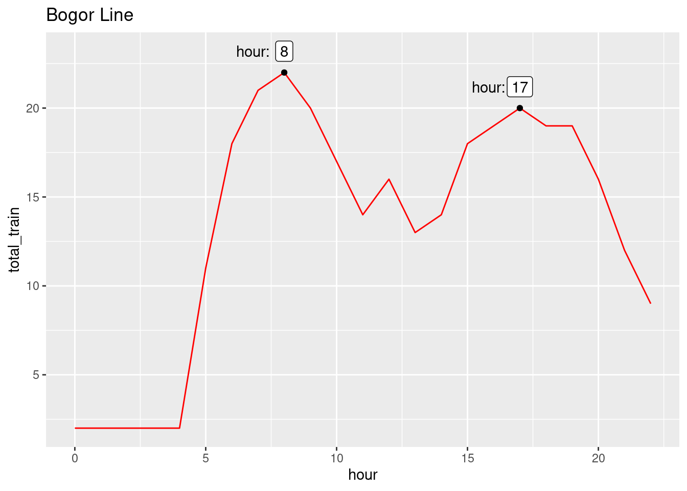

See how I collect, clean, and analyze Manggarai’s train station dataset
Author
invictus
Published
August 6, 2024
Modified
August 13, 2024
Introduction
in Indonesia, especially in Jakarta, train stations are popular methods for transportation. Out of over 50 train stations, the busiest among them is Manggarai, which also act as the main hub for trains from all different routes. If you’re an Indonesian, you know how busy it is during the morning.
Here is the map of the train route from all stations. You can see that Manggarai lies at the center of the map, being the hub of all major routes.
With a full day schedule from 00:00 to 23:00, let’s uncover what interesting insight we could find.
Collecting Data
There is an official national train company website, KAI Commuter, where you can query the schedule based on specified departure and destination. The schedule will then be displayed on the page.
We can then scrape the page to collect the data. However, I found something interesting when I opened up the dev tools and go to the network tab
You can see it got the data from an api. If you open the request url, you’ll see the full JSON file:
Unfortunately, the trick no longer works. That was a week ago. Now, if you try the same trick, you’ll get a 401 unauthorized access instead.
Parsing Data
First, we need to transform them to a data frame format, where each key will be its own column. As usual, let’s load up the weapon, tidyverse!
library(tidyverse)
── Attaching core tidyverse packages ──────────────────────── tidyverse 2.0.0 ──
✔ dplyr 1.1.4 ✔ readr 2.1.5
✔ forcats 1.0.0 ✔ stringr 1.5.1
✔ ggplot2 3.5.1 ✔ tibble 3.2.1
✔ lubridate 1.9.3 ✔ tidyr 1.3.1
✔ purrr 1.0.2
── Conflicts ────────────────────────────────────────── tidyverse_conflicts() ──
✖ dplyr::filter() masks stats::filter()
✖ dplyr::lag() masks stats::lag()
ℹ Use the conflicted package (<http://conflicted.r-lib.org/>) to force all conflicts to become errors
library(jsonlite)
Attaching package: 'jsonlite'
The following object is masked from 'package:purrr':
flatten
There isn’t any particular objective at hand. I just want to explore the data and find any interesting insights. So, any column might be needed later. However, there are 2 columns that are less likely to be used: train_id and color.
color is obvious. It was used to differentiate the routes visually on KAI Commuterline. However, I’m thinking for using them here for the same purpose as well when drawing plots. So, let’s keep that for now.
train_id is just the identifier of each train. It’s not a useful information for regular customers because any train is virtually the same. Nevertheless, I’ll keep that too, as I’m curious if any particular train stand out.
Rename Columns
It’s good enough it is, with snake_case and quite descriptive names. But we can make it better by changing a few:
‘ka’ in ka_name stands for ‘Kereta Api’, which means ‘trains’. It looks odd because the rest of the columns use English. So, we can rename it to train_name. Honestly, they don’t feel like names at all, they’re more like lines, so let’s rename them as train_lines
since there is dest_time, we can change dest to dest_city.
we can rename time_est to est_time for better consistency with dest_time. In fact, the word est itself is not quite clear, so we can rename it further as arrival_time
‘destination’ would be much clearer than just ‘dest’, so let’s rename all ‘dest’ to ‘destination’
I noticed earlier that the train lines are a bit too long and redundant
df_renamed |>count(train_line, name ='total_train')
# A tibble: 5 × 2
train_line total_train
<chr> <int>
1 COMMUTER LINE BOGOR 302
2 COMMUTER LINE BST 28
3 COMMUTER LINE CIKARANG 211
4 COMMUTER LINE RANGKASBITUNG 1
5 DINAS RANGKAIAN KRL (TIDAK ANGKUT PENUMPANG) 3
Let’s cut the Commuter Line.
df_renamed <- df_renamed |>mutate(train_line =str_remove(train_line, 'COMMUTER LINE '))
DINAS Rangkaian is a special train that most people can’t get in anyway. So let’s remove that.
df_renamed <- df_renamed |>filter(train_line !="DINAS RANGKAIAN KRL (TIDAK ANGKUT PENUMPANG)")
Correct Data Types
All the columns are currently in chr data type. So, we need to fix each one of them.
train_id: It contains both numbers and letters, so let’s leave it as chr
ka_name: this column contains a limited set of labels, so factor would be more appropriate
route_name, dest: same reason as ka_name
time_est, dest_time: date objects. More specifically, a period object from lubridate
color: kinda tricky. We know there are millions of possible color combinations. But, we also know the train station only uses around 5 of them. Well, let’s count it first. if there’s truly only few, we’ll convert them to factor.
df_renamed |>count(color, name ='total')
# A tibble: 3 × 2
color total
<chr> <int>
1 #0084D8 212
2 #E30A16 302
3 #F76114 28
Alright, everything looks great. Let’s move on to analysis.
Analyzing Data
Since there’s no specific objectives, there’s many insights we could look for.
Library
There’s one library that will be helpful to aid our analysis, ggpmisc. it’ll extend our ggplot quite nicely.
library(ggpmisc)
Loading required package: ggpp
Registered S3 methods overwritten by 'ggpp':
method from
heightDetails.titleGrob ggplot2
widthDetails.titleGrob ggplot2
Attaching package: 'ggpp'
The following object is masked from 'package:ggplot2':
annotate
Peak Hours
The first thing that comes to my mind is finding the peak hours. Knowing this, we can anticipate when is the best time to go to the station.
Although, the ideal way to deduce this is to have the data of the passengers’ traffic: how many that comes every day and every hour. Nevertheless, we could still infer it based on the amount of trains there are at the moment. It’s logical for the company to increases it as the traffic goes up.
To get the peak hours, we can count the number of trains per hour and aggregate the sum.
So, the peak is on hour 7 and 16, with a total of 37 trains.
df_peak_hour |>count(hour, name ='total_trains') |>ggplot(aes(hour, total_trains)) +geom_line()
We can also group it by the lines.
df_peak_hour |>count(hour, train_line, name ='total_trains') |>ggplot(aes(hour, total_trains, color = train_line)) +geom_line() +scale_color_manual(values =c("BOGOR"="red","BST"="blue","RANGKASBITUNG"="green","CIKARANG"="cyan"# Add more mappings as needed ))
Let’s zoom in on each line
Bogor Line
Code
df_peak_hour |>count(hour, train_line, name ='total_train') |>filter(train_line =='BOGOR') |>ggplot(aes(hour, total_train)) +geom_line(color='red') +stat_peaks() +stat_peaks(geom ='text',x.label.fmt ='hour:', position =position_nudge(x=-1.2, y =1.2) ) +stat_peaks(geom ='label', position =position_nudge(y=1.2)) +labs(title ='Bogor Line')
Warning in sprintf(fmt, x): one argument not used by format 'hour:'

Cikarang Line
Code
df_peak_hour |>count(hour, train_line, name ='total_train') |>filter(train_line =='CIKARANG') |>ggplot(aes(hour, total_train)) +geom_line(color='cyan') +stat_peaks() +stat_peaks(geom ='text',x.label.fmt ='hour:', position =position_nudge(x=-1.2, y =1.2) ) +stat_peaks(geom ='label', position =position_nudge(y=1.2)) +labs(title ='Cikarang Line')
Warning in sprintf(fmt, x): one argument not used by format 'hour:'
This one is a bit special. There is only 1 time out of the whole day when this train arrives. Which is at 14:40. It will go straight to Rangkasbitung after arriving in Tanahabang, where you’d usually transit at Tanahabang to switch train.
Here is the route again if you forget.
Peak Hours summary
The first peaks happen around 06:00 = 07:00, whcih makes sense because that’s when most people are going to work. The socond peaks happen around 16:00-17:00, which is when most people are going home.
Train Intervals
The next useful insight we could find is the interval between the trains. We could obtain this by lagging the arrival_time by 1, and subtract it from the original arrival_time for all rows.
Except for BST and Rangkasbitung, the interval is very short. This means passengers don’t need to worry about getting late, because the next train will soon arrive in less than 10 minutes.
Unfortunately, we combined all routes from the same line as if they’re the same routes. In reality, one line can be used for many different routes. So it would be more accurate to compute the arrival_mean and arrival_mad for each route, provided that each passenger would only focus on of these routes.
Temporary Conclusion and Recommendation
First, let’s sum up what we’ve found so far.
Peak Hours
Highest spikes of train arrivals occur between on 06:00-07:00 and 16:00-17:00, where people are going to work and going home from work, respectively.
Train Intervals
On average, new train arrives roughly every 5-10 min.
Conclusion
Right now, our findings of Train Intervals isn’t helpful, because we combined all the routes as one. So, Peak Hours is our weapon for now. With this, we can say that if you want to avoid peak hours that are extremely crowded, avoid the peak hours. Conversely, if you don’t want to wait for a long time for the next train, come during peak hours.
Follow Up Project
My current analysis is still inadequate and lack depth. To be honest, I find it hard to write an article while doing EDA at the same time in the same place.
Next time, I’ll first focus entirely on EDA, exploring all the interesting variables that come to mind without writing any explanations. After that, I’ll do a second post, highlighting the key insights I’ve got from the EDA.
Let’s export the current dataframe to a csv so I don’t need to clean it from scratch.